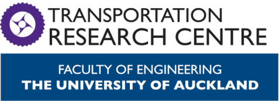

Data-driven Transport Modelling in Urban Areas
Minh Kieu
Senior Lecturer
University of Auckland, New Zealand

Lab website:
https://transportanalytics.nz
Wirelessly Powered Transport Infrastructure for a Low-carbon Future (2021-2026)
MBIE Endeavour Programme
Charging of Electric Vehicles: Wired or Wireless
Wireless: Static or Dynamic
5-year research programme between Transport, Electrical, Science and Bussiness School at the University of Auckland
In collaboration with ASPIRE (5-year NSF Research programme): Utah State, Purdue, Colorado, Virginia Tech, etc https://aspire.usu.edu/
Can Autonomous Vehicles operate continuously now?
Smart routing + DWC
Multi-objective optimisation: too complex for existing algorithms


What if we are stuck on traffic?
Guided Control of Mixed Platoon
Autonomous vehicles can help us merge like a zip!
Mixed Platoon Guided Control


Funding for highway improvements and operations are highest and increasing. However...

QuakeCore's Inter-disciplinary Theme 3 - A Resilient Aotearoa New Zealand Transport System
Rapid Resilience: Data-Driven Strategies for Prioritizing Transport Infrastructure Rehabilitation after Natural Disasters
- Better use of our limited funding for higher standards of transport infrastructure maintanance and faster rehabilitation after natural disasters.
- Enhance community resilience through responsive decision-making.
Call for collaboration
I love working with interesting datasets!
I am expanding to transport resilience / recovery from natural disasters or incidents
Data-driven Transport Modelling in Urban Areas
Thank you!
Questions?
Lab website:
https://transportanalytics.nz